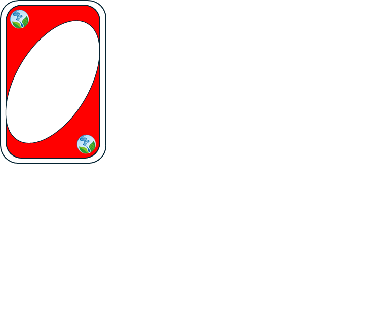

<!DOCTYPE html>
<html lang="pt-BR">
<head>
    <meta charset="UTF-8">
    <meta name="viewport" content="width=device-width, initial-scale=1.0">
    <title>Jogo da Memória</title>
    <style>
        body {
            display: flex;
            justify-content: center;
            align-items: center;
            height: 100vh;
            background-color: #f8f8f8;
        }
        .grid {
            display: grid;
            grid-template-columns: repeat(5, 100px);
            grid-template-rows: repeat(4, 100px);
            gap: 10px;
        }
        .card {
            width: 100px;
            height: 100px;
            background-color: #333;
            display: flex;
            align-items: center;
            justify-content: center;
            font-size: 24px;
            color: white;
            cursor: pointer;
            user-select: none;
        }
        .hidden {
            background-color: #bbb;
            color: #bbb;
        }
    </style>
</head>
<body>
    
    <div class="grid" id="grid"></div>
    <script>
        // Lista de símbolos para as cartas
        const symbols = ['🍎', '🍌', '🍒', '🍇', '🍉', '🍍', '🥝', '🍓', '🥥', ''];
        
        // Duplica os símbolos para formar pares e embaralha as cartas
        let cards = [...symbols, ...symbols].sort(() => Math.random() - 0.5);
        let firstCard = null;
        let secondCard = null;
        let lockBoard = false; // Impede cliques durante verificações

        // Obtém o elemento da grade no HTML
        const grid = document.getElementById("grid");
        
        // Cria as cartas e adiciona eventos de clique
        cards.forEach((symbol, index) => {
            const card = document.createElement("div");
            card.classList.add("card", "hidden");
            card.dataset.symbol = symbol;
            card.dataset.index = index;
            card.addEventListener("click", flipCard);
            grid.appendChild(card);
        });

        // Função para virar uma carta
        function flipCard() {
            if (lockBoard) return; // Impede cliques enquanto as cartas estão bloqueadas
            if (this === firstCard) return; // Evita clique duplo na mesma carta

            this.textContent = this.dataset.symbol; // Exibe o símbolo da carta
            this.classList.remove("hidden");
            
            if (!firstCard) {
                firstCard = this;
                return;
            }
            
            secondCard = this;
            checkMatch();
        }

        // Função para verificar se duas cartas viradas são iguais
        function checkMatch() {
            lockBoard = true;
            if (firstCard.dataset.symbol === secondCard.dataset.symbol) {
                resetCards(true); // Mantém as cartas visíveis
            } else {
                setTimeout(() => resetCards(false), 1000); // Esconde as cartas após um segundo
            }
        }

        // Função para redefinir o estado das cartas
        function resetCards(match) {
            if (!match) {
                firstCard.textContent = "";
                firstCard.classList.add("hidden");
                secondCard.textContent = "";
                secondCard.classList.add("hidden");
            }
            firstCard = null;
            secondCard = null;
            lockBoard = false; // Desbloqueia o tabuleiro
        }
    </script>
</body>
</html>
